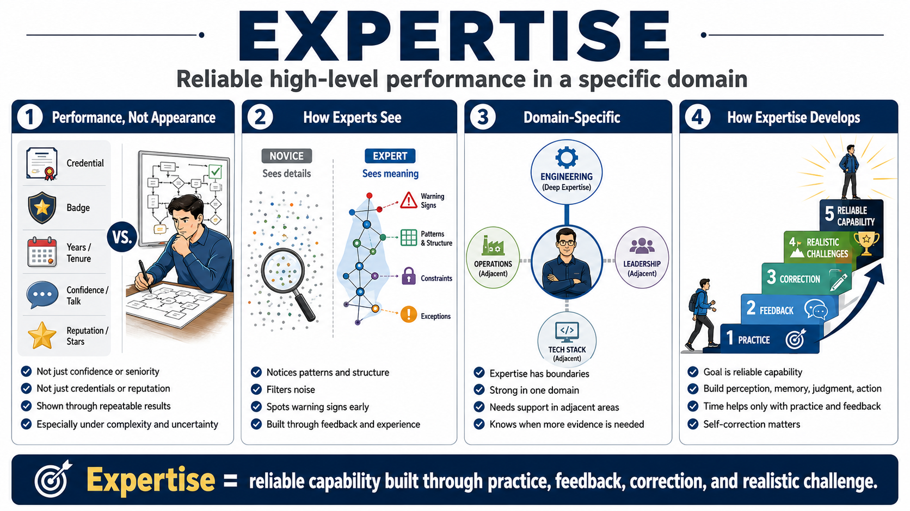

What Is Expertise?
Connecting to LMS... Progress: in progress

Narration
Expertise is reliable high-level performance in a specific domain. It is not just confidence, seniority, a credential, a reputation, or years spent near a problem. Those signals may be useful context, but they do not prove that someone can notice the right details, make sound judgments, adapt when conditions change, and produce strong outcomes repeatedly. Expertise is demonstrated in performance, especially when the work includes complexity, uncertainty, and consequences.
Experts tend to see more structure than novices. A beginner may see isolated details, while an expert notices patterns, constraints, exceptions, and warning signs. This is not magic. It comes from trained perception, organized knowledge, and repeated encounters with meaningful feedback. Over time, the expert learns what deserves attention, what can usually be ignored, which exceptions matter, and which early signals suggest a problem is moving in a dangerous direction.
Expertise is also domain-specific. A person can be deeply skilled in one kind of engineering review, one operational environment, one leadership context, or one technical stack, while still needing support in a neighboring area. This does not make the expertise less real. It makes it more precise. Strong experts usually understand where their skill applies, where it becomes uncertain, and when they need additional evidence or another specialist's judgment.
For practical training and workplace development, this definition changes the goal. The aim is not to make learners sound fluent or feel certain. The aim is to build reliable capability. That means developing perception, memory, judgment, action, and self-correction in the domain where performance matters. Expertise is built over time, but time only helps when it includes practice, feedback, correction, and increasingly realistic challenges.